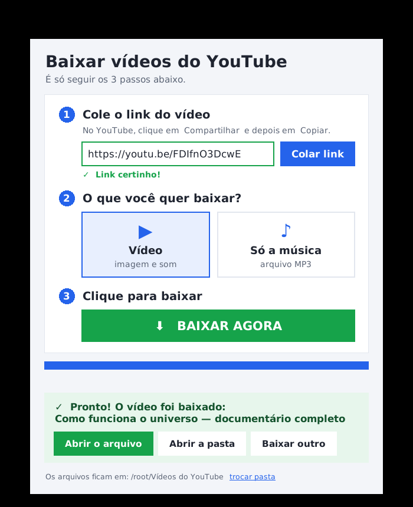

Baixe vídeos do YouTube de um jeito fácil
Cole o link, escolha vídeo ou música e pronto. Grátis, sem anúncios e sem cadastro.
⬇ Baixar o programa para WindowsNão precisa instalar nada: é só abrir o arquivo.

Como usar
- Clique no botão verde acima para baixar o programa.
- Abra o arquivo BaixadorYouTube.exe que foi baixado (geralmente fica na pasta Downloads).
- No YouTube, abra o vídeo, clique em Compartilhar e depois em Copiar.
- Volte ao programa: o link já aparece sozinho. Escolha Vídeo ou Só a música e clique em Baixar agora.
- Quando terminar, clique em Abrir o arquivo para assistir ou ouvir.
Apareceu uma tela azul do Windows?
Se aparecer "O Windows protegeu o computador", clique em Mais informações e depois em Executar assim mesmo.
Isso acontece com programas novos que o Windows ainda não conhece. O código é aberto e pode ser conferido no
GitHub.